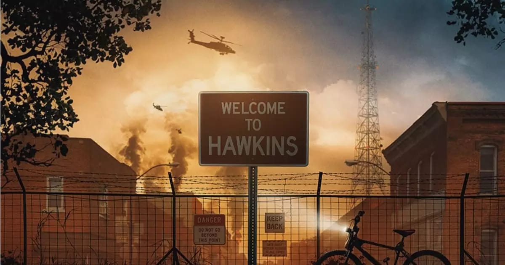
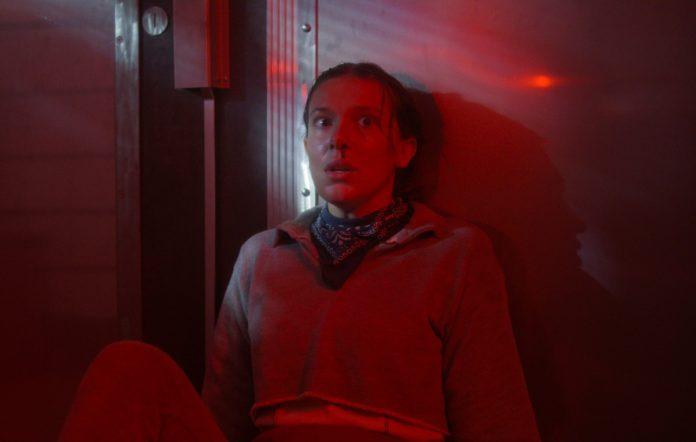
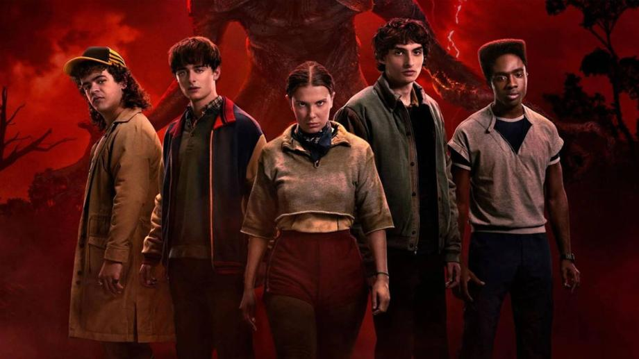
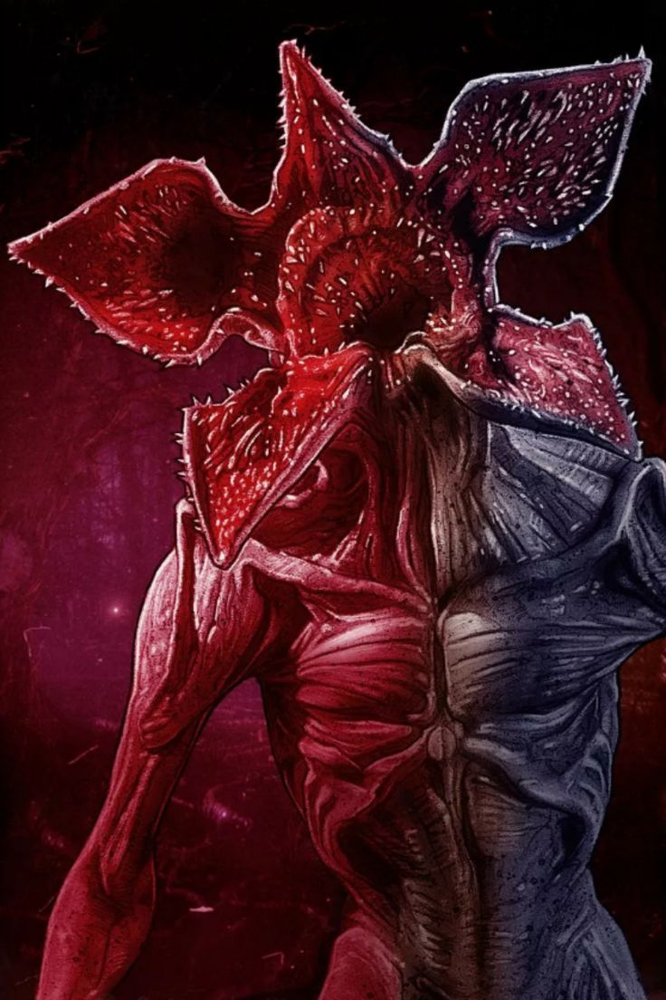

Stranger Things é uma série de ficção científica ambientada nos anos 80, cheia de mistério e suspense.
A história acompanha um grupo de amigos enfrentando eventos sobrenaturais e criaturas perigosas.
"Amigos não mentem." – Eleven

Eleven possui poderes telecinéticos e é fundamental na luta contra o Mundo Invertido.

O grupo de amigos representa união e coragem.

Uma dimensão paralela escura cheia de criaturas perigosas.
Temporada 1: Desaparecimento de Will.
Temporada 2: A ameaça cresce.
Temporada 3: Nova criatura.
Temporada 4: Surge Vecna.
Temporada 5: Final da série.
⬆ Voltar ao topo